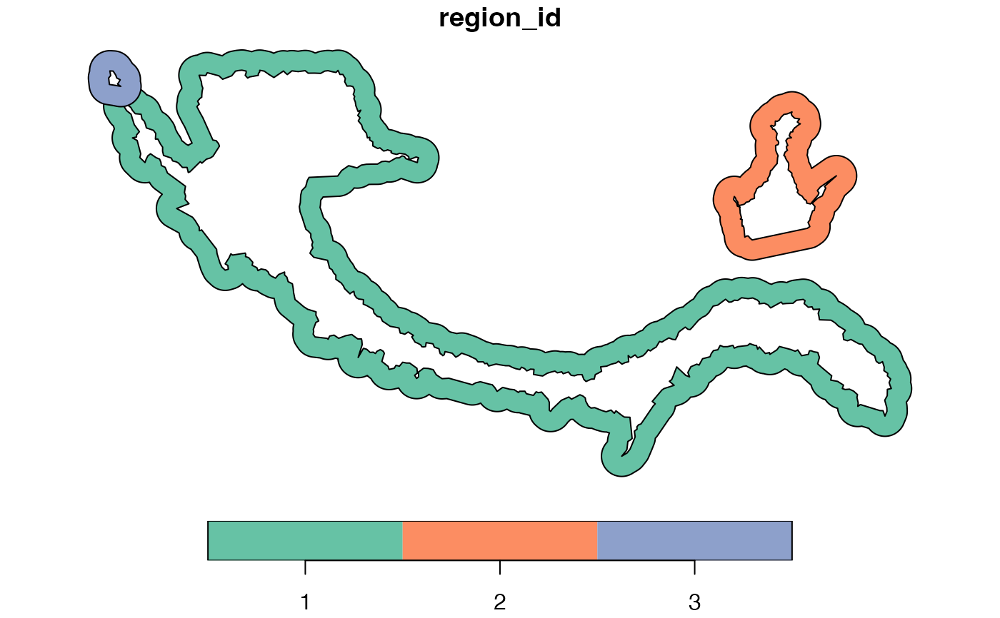

Generate ring regions between a boundary and its outer buffer
Source:R/GetBoundary.R
GetRingRegion.RdComputes spatial ring-shaped regions by subtracting the original
boundary polygons from their corresponding outer buffered polygons.
If the outer_boundary is not supplied, it will be automatically computed
using getOuterBoundary().
This is useful for analyzing periphery-enriched cell types or
gradient-based features near a boundary.
Arguments
- boundary
A data frame of boundary points (with columns
x,y,region_id) or ansfobject.- outer_boundary
Optional
sfobject containing buffered (outer) boundary polygons. If not provided, it will be automatically computed usinggetOuterBoundary().- ...
Additional arguments passed to
getOuterBoundary()ifouter_boundaryis not provided.
Value
An sf object containing the ring-shaped spatial regions generated by
subtracting each inner boundary polygon from its corresponding
outer boundary polygon.
Examples
# Load coordinates
coords <- readRDS(system.file("extdata", "MouseBrainCoords.rds",
package = "SpNeigh"
))
head(coords)
#> x y cell cluster
#> 1 1898.815 2540.963 1 4
#> 2 1895.305 2532.627 2 4
#> 3 2368.073 2534.409 3 2
#> 4 1903.726 2560.010 4 4
#> 5 1917.481 2543.132 5 4
#> 6 1926.540 2560.044 6 4
# Get boundary points of cluster 2
boundary_points <- getBoundary(data = coords, one_cluster = 2)
# Automatically compute outer boundary and get rings
ring_regions <- getRingRegion(boundary = boundary_points, dist = 100)
plot(ring_regions)

# Or provide both inner and outer boundaries explicitly
outer <- getOuterBoundary(boundary_points, dist = 100)
rings <- getRingRegion(boundary = boundary_points, outer_boundary = outer)
plot(rings)